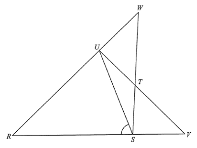

DSE 2023 · 卷二 · Q22
圓內接四邊形與外點
圓形幾何 · 圓內接四邊形 · 選擇題
題目
圖中 $RSTU$ 為圓內接四邊形，其中 $ST=TU$。$RS$ 延長與 $UT$ 延長交於 $V$，而 $RU$ 延長與 $ST$ 延長交於 $W$。若 $\angle RWS=32^\circ$、$\angle RVU=48^\circ$，求 $\angle RSU$。
A.
$65^\circ$
B.
$73^\circ$
C.
$80^\circ$
D.
$82^\circ$

原題附圖
題解
R
S
T
U
V
W
ST = TU
32°
外點割線 + 等弦 ⟹ 四段弧
圖：圓內接四邊形 $RSTU$（$ST=TU$），$V$、$W$ 為延長線交點；$\angle RWS=32^{\circ}$（題解繪）
第 1 步
等弦對等弧
等弦等弧
\(ST=TU\ \Rightarrow\ \text{弧 }ST=\text{弧 }TU\)
同圓中相等的弦截取相等的弧。
設弧 $ST=$ 弧 $TU=2a$，弧 $RU=2b$，弧 $RS=2c$。
第 2 步
外點 $W$：兩條割線
外點割線角
\(\angle W=\tfrac12(\text{遠弧}-\text{近弧})\)
圓外一點引兩條割線，夾角等於所截兩弧之差的一半。
$W$ 的割線為 $W\!-\!T\!-\!S$ 與 $W\!-\!U\!-\!R$（近點 $T$、$U$，遠點 $S$、$R$）：\[ 32^\circ=\frac12(2c-2a)=c-a\quad\cdots(1) \]
第 3 步
外點 $V$：兩條割線
$V$ 的割線為 $V\!-\!S\!-\!R$ 與 $V\!-\!T\!-\!U$（近點 $S$、$T$，遠點 $R$、$U$）：\[ 48^\circ=\frac12(2b-2a)=b-a\quad\cdots(2) \]
第 4 步
用四段弧之和
四段弧合成整個圓：\[ 2a+2a+2b+2c=360^\circ\ \Rightarrow\ 2a+b+c=180^\circ \]
第 5 步
解出 $a$、$b$
由 (1)(2)：$b=a+48$、$c=a+32$，代入上式：\[ 2a+(a+48)+(a+32)=180^\circ\Rightarrow 4a=100^\circ\Rightarrow a=25^\circ \]故 $b=73^\circ$、$c=57^\circ$（驗算：$50+50+146+114=360$ ✓）。
第 6 步
求 $\angle RSU$
$\angle RSU$ 是圓周角，對弧 $RU=2b$：\[ \angle RSU=\frac{2b}{2}=b=73^\circ \]
答案
B
（$73^\circ$）
練習
同類新題
題目.
圓內接四邊形 $ABCD$ 中，$AB$ 延長與 $DC$ 延長交於 $P$。若弧 $AD=100^\circ$、弧 $BC=40^\circ$，求 $\angle APD$。
顯示題解
第 1 步.
$P$ 為外點，割線 $P\!-\!B\!-\!A$ 與 $P\!-\!C\!-\!D$
第 2 步.
$\angle APD=\dfrac12(\text{弧 }AD-\text{弧 }BC)$
答案：$\dfrac12(100^\circ-40^\circ)=30^\circ$
‹ 上一題
目錄
下一題 ›